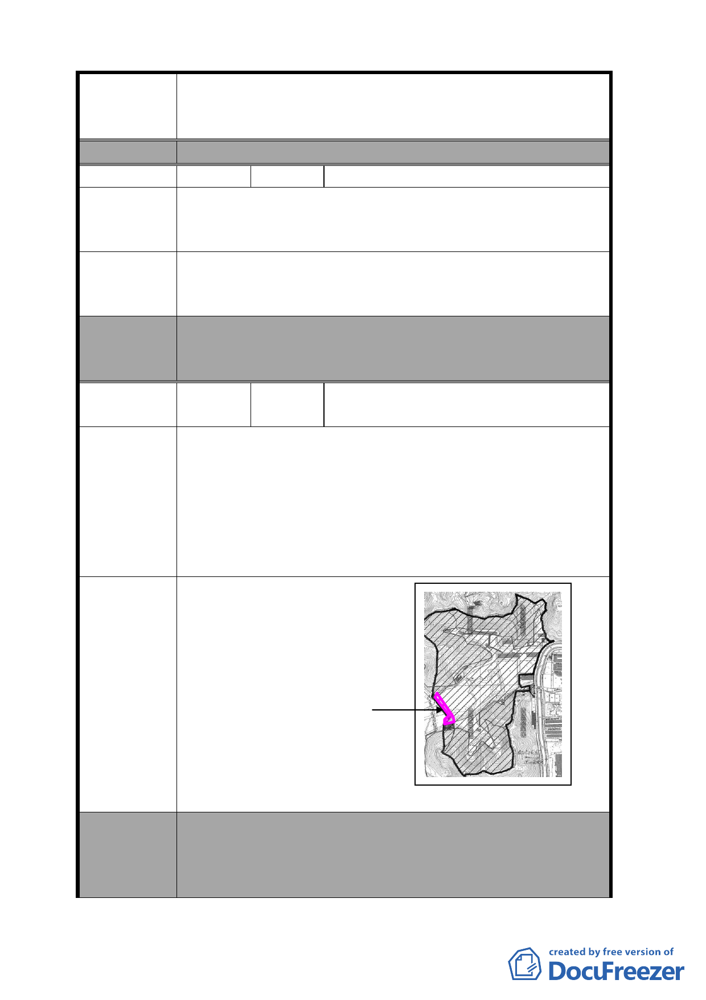

案名
編號
陳情理由
建議辦法
委員會
決議
編號
陳情理由
擬定臺北市南港區中南段 2 小段 302-1 地號等機關用地
（供國家生技研究園區使用）及中南段 1 小段 628 地號
等機關用地（供中央研究院及國防部使用）細部計畫案
作為施工車輛之主要道路。
3 陳情人 楊里長立凡
本開發案在施工期間，請不要以研究院路 2 段 12 巷作
為施工車出入道路，否則將會造成研究院路交通癱瘓，
更會造成本社區生活環境大浩劫。
請另開闢一條道路直通忠孝東路，作為施工車輛進出園
區使用，如此才能解決該地區交通問題，及民眾之生活
品質，及生命財產安全。
1.本項有關施工期間車輛行駛路線，非屬都市計畫範疇。
2.申請單位本次會議所提資料說明，將評估以防汛道路
作為施工車輛之主要道路。
4
陳情人
國防部軍備局生產製造中心
第 202 廠
1.北市南港區中南段 2 小段 302-1 地號土地變更供國家
生技研究園區使用，其中西南側界邊道路為 202 廠廠
區主要幹道，橫跨四分溪支流並緊鄰該區主要排水渠
道，第 202 廠已規劃在馬路東側興建圍牆並加作橫跨
地下排溝，以加強四分溪排水防洪功能。
2.全區域整體考量防汛、排水營區區隔及軍資運輸安全
疏散及等因素，該道路仍應維持設定第 202 廠使用。
建議修正國家生技研究園
區西側變更範圍，詳如地
形圖。
建議辦法
202 廠擬
使用範圍
委員會
決議
本案除應增列以下規定外，其餘依市府本次所送修
正計畫書內容通過。
1.北側機關用地應規劃滯洪設施，並至少維持現有調節
池容量及面積規模。
-6-